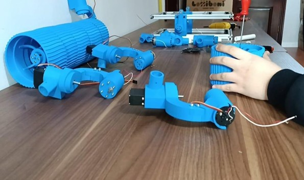

Giriş
Bu çalışmamız Mars gezegenine keşif yapmak amacıyla tasarlanmış otonom bir robot aracıdır. Bu projede temel amacımız Mars yüzeyini olanları incelemek ve veri toplamak üzere geliştirilen araçtır. Uzay araştırmaları için çok önemli bir rol oynamaktadır. Mars Rover'lar, yüzeydeki farklı ortam koşullarını gözlemleyerek kullanıcıya aktarılır. İnsanlarına Mars’ın atmosferi ve olası yaşam izleri hakkında bilgi sağlar. Projemizde, Mars Rover’ımızın temel işlevleri arasında kamera ve çeşitli sensörlerle çevresel olarak analiz yapmaktır. Mars yüzeyinde hareket etmek, canlı görüntü almak çeşitli toprak ve kaya örneklerini toplamak ve gönderilen komutlarla otonom hareket etmektir. Rover, Marsta güneş enerjisi ile çalışır ve karmaşık bir yazılım desteği ile otonom hareket kabiliyeti kazanır. Ayrıca, tasarım aşamasında kullanılan sensörler, sıcaklık, basınç, nem gibi çevresel faktörleri ölçerek gezegenin koşulları hakkında bilgi almamızı sağlar. Mars Rover’ının başarılı bir şekilde çalışabilmesi için, bu projede dayanıklı ve güvenilir bir donanıma sahiptir. Proje kapsamında, Rover’ın motorları, şasisi ve iletişim sistemleri gibi ana bileşenlerin doğru bir şekilde entegrasyonu sağlanmıştık. Rover, zorlu Mars koşullarında uzun süreli görevler yapabilmesi için olasılığı düşündük ve ona göre tasarladık. Bu proje, uzay mühendisliği ve robotik teknolojilerin birleşimini temsil etmekte olup, Mars keşiflerde katkıda bulunma amacını taşır. Aynı zamanda, bilimsel verilerin toplanmasında ve keşiflerde kullanılacaktır.
Anahtar Kelimeler: Mars Rover, keşif robotu, otonom araç, Mars yüzeyi, veri toplama, uzay araştırmaları, çevresel analiz, kamera ve sensörler, toprak ve kaya örnekleri, bilimsel veri toplamak
Tanıtım Videosu
İçindekiler
Mars Perseverance Rover Projesi
Kullanılan Tüm Materyaller

Arduino Mega 2560
Arduino Mega 2560, üzerinde 54 tane giriş/çıkış pini bulunduran Atmega2560 temelli bir mikrodenetleyici kartıdır. 16 adet analog giriş bulunmaktadır. 4 adet UART 16 Mhz kristal, usb soketi, güç soketi, ICSP konektörü ve reset tuşu bulunmaktadır. Mikrodenetleyicinin çalışabilmesi için gereken her şey bulunmaktadır. USB kablo ile bilgisayara kolayca bağlanabilir, adaptör ya da pil ile çalıştırabilirsiniz.
Arduino Mega 2560 Özellikleri;
● Mikrodenetleyici: Atmega2560 ● Çalışma Gerilimi: 5V ● Giriş Gerilimi (önerilen): 7-12V ● Giriş Gerilimi (limit): 6-20V ● Dijital I/O Pinleri: 54 (15 tanesi PWM çıkışı) ● Analog Giriş Pinleri: 16 ● Her I/O için Akım: 40 mA ● 3.3V Çıkış için Akım: 50 mA ● Flash Hafıza: 256 KB (Atmega2560) 8 KB kadarı bootloader tarafından kullanılır. ● SRAM: 8 KB (ATmega2560) ● EEPROM: 4 KB (ATmega2560) ● Saat Hızı: 16 MHz12V 10 RPM 37mm Redüktörlü DC Motor
Bu motor, 12V gerilimle çalışan, düşük hızda (dakikada 10 devir) yüksek tork sağlayan bir DC motordur. Üzerinde bulunan 37 mm çapındaki metal dişli kutusu (redüktör), motorun çıkış torkunu artırırken hızını düşürür. Bu sayede yük altında bile kararlı bir dönüş sağlar. Robotik platformlarda, otomasyon sistemlerinde ve ağır yük kaldırma uygulamalarında sıkça kullanılır. Motorun düşük devri sayesinde hassas ve kontrollü hareketler elde edilir.
MG996R Servo Motor
MG996R, yüksek torklu ve metal dişli yapısına sahip bir servo motordur. 4.8V–7.2V arası gerilimle çalışabilir ve maksimum 11 kg·cm tork üretebilir. Genellikle robotik kollar, yön kontrol mekanizmaları ve RC araçlar gibi uygulamalarda kullanılır. 0 ila 180 derece arasında pozisyonlama yapabilir ve dahili geri besleme sistemi sayesinde verilen konumu hassas biçimde tutar. Metal dişli mekanizması sayesinde aşınmaya karşı dayanıklıdır ve uzun ömürlüdür.

Nema 17 Step Motor
Nema 17, 1.8 derece adım açısına sahip, yaygın olarak kullanılan bir bipolar step motordur. Her tam turda 200 adım yaparak hassas pozisyonlama sağlar. Genellikle 2 fazlı çalışan bu motorlar, CNC makineleri, 3D yazıcılar ve otomatik yönlendirme sistemlerinde tercih edilir. Nema 17, genellikle 12V ile beslenir ve sabit tork üretimi sayesinde senkron hareket gerektiren uygulamalarda güvenle kullanılır.
DRV8871 DC Motor Sürücüsü
DRV8871, Texas Instruments tarafından üretilen ve DC motorları yön ve hız kontrolü ile sürebilen yüksek akım kapasiteli bir motor sürücü entegresidir. 6.5V–45V arası besleme voltajıyla çalışır ve sürekli 3.6A akım sağlayabilir. Hem PWM (hız kontrolü) hem de yön kontrolü için giriş pinleri bulunur. Dahili termal koruma ve akım sınırlama özellikleri sayesinde motorları güvenli bir şekilde sürmek için idealdir. Robotik ve mobil platformlar gibi projelerde tercih edilir.

A4988 Step Motor Sürücüsü
A4988, bipolar step motorlar için tasarlanmış mikrostepping özellikli bir motor sürücüdür. 8 mikroadım seviyesine kadar hassas konumlandırma sağlar. Genellikle 8V–35V arasında çalışır ve 2A’e kadar motor akımı sağlayabilir. A4988 sürücü, Nema 17 gibi motorlarla birlikte kullanılarak hassas konum kontrolü yapılmasına olanak tanır. Dahili termal koruma, aşırı akım koruması ve kısa devre koruması gibi güvenlik özelliklerine sahiptir.

XL4016 DC DC Step-down regülatörü
XL4416, yüksek verimli bir DC-DC step-down regülatör modülüdür. Giriş voltajını daha düşük bir çıkış voltajına indirerek sistem bileşenlerinin uygun gerilimle çalışmasını sağlar. 4V–40V arası giriş gerilimini destekler ve çıkış gerilimi potansiyometre ile ayarlanabilir. 3A’e kadar sürekli akım sağlayabilir. Yüksek anahtarlama frekansı ve entegre ısı koruma sistemi sayesinde kararlı ve güvenilir enerji sağlar.
NRF24L01 2.4GHz Alıcı Modül
NRF24L01, 2.4GHz frekans bandında çalışan, düşük güç tüketimli ve yüksek veri iletim kapasiteli kablosuz haberleşme modülüdür. SPI protokolü ile Arduino ve benzeri mikrodenetleyicilerle kolaylıkla haberleşebilir. 2 Mbps’ye kadar veri hızı ve 100 metreye kadar açık alan menzili sunar. Robotik, IoT ve uzaktan kontrol uygulamalarında çift yönlü veri aktarımı için sıklıkla tercih edilir.

MT3608 Voltaj Regülatörü
MT3608, step-up (boost) tipi bir DC-DC voltaj dönüştürücüsüdür. 2V–24V arası giriş gerilimini alarak çıkış voltajını 28V’a kadar yükseltebilir. 2A’e kadar çıkış akımı sağlayabilir. Düşük gerilim kaynaklarından (örneğin Li-ion pil) daha yüksek gerilimle çalışan devreleri beslemek için idealdir. Kompakt boyutları ve yüksek verimi sayesinde taşınabilir projelerde yaygın olarak kullanılır.

Type-C 12V DC Regülatör
Type-C 12V DC regülatör, modern USB Type-C bağlantısı üzerinden 12V sabit çıkış verebilen bir güç dönüştürücü modüldür. Bu modül, özellikle taşınabilir projelerde USB-C adaptör veya powerbank gibi yaygın enerji kaynaklarından 12V elde etmek amacıyla kullanılır. Giriş voltajı genellikle 5V’tur ve modül bunu dahili voltaj yükseltme (boost) devresi ile 12V seviyesine çıkarır. Genellikle düşük akım çeken sistemlerin güç ihtiyacını karşılamak için uygundur. Mikrodenetleyici sistemleri, sensörler, hafif motorlar ve bazı LED uygulamaları gibi donanımlar için yeterli gücü sağlayabilir. Kompakt ve hafif yapısıyla dar alanlarda kullanıma uygundur. USB-C üzerinden beslenmesi, modern cihazlarla uyumluluğunu artırırken, adaptör taşımadan enerji sağlanmasına olanak tanır. Aşırı akım ve kısa devre korumalı modelleri de mevcuttur.

XL6009 Boost Dönüştürücü Modül
XL6009, yüksek verimli bir DC-DC step-up (boost) dönüştürücüdür ve düşük voltajlı kaynaklardan daha yüksek voltaj üretmek için kullanılır. 3V ile 32V arasında değişen geniş bir giriş voltaj aralığını destekler ve çıkış voltajı 5V ila 35V arasında ayarlanabilir. Üzerindeki potansiyometre sayesinde çıkış voltajı kolayca istenen seviyeye getirilebilir. XL6009 modülü, entegre anahtarlamalı güç kontrolü sayesinde yüksek verimle çalışır ve 4A'e kadar çıkış akımı verebilir (soğutma yeterliyse). Bu özellikleri sayesinde, batarya ile çalışan sistemlerde, LED panellerde, taşınabilir şarj cihazlarında ve robotik sistemlerde oldukça sık tercih edilir. Ayrıca, yüksek frekansta çalışması sayesinde çıkış gerilimi daha kararlı ve gürültüsüzdür. Kompakt PCB yapısı sayesinde hem amatör hem profesyonel projelerde kullanımı yaygındır.

LM2596S Step-Down (Buck) Dönüştürücü Modül
LM2596S, giriş voltajı yüksek olan kaynaklardan daha düşük, stabil bir çıkış voltajı üretmek için kullanılan step-down (buck) tipi bir DC-DC dönüştürücü modüldür. Giriş voltajı 4V ila 40V arasında olabilirken, çıkış voltajı ayarlanabilir şekilde 1.25V ila 35V arasında değiştirilebilir. Çıkış akımı genellikle 2A–3A seviyesindedir. Modül üzerinde voltaj ayarı için bir potansiyometre ve bazı modellerde çıkış voltajını gösteren dijital voltmetre ekranı bulunur. Verimliliği %75–%90 arasında değişebilir. Yüksek voltajlı sistemlerde düşük voltajlı mikrodenetleyiciler, sensörler, ekranlar ve haberleşme modüllerinin güvenli şekilde beslenmesini sağlar. Metal soğutucu ve sabit anahtarlama frekansı ile yüksek kararlılık sağlar. Ayrıca, ters polarite koruması, aşırı akım koruması ve termal koruma gibi özelliklerle donatılmış modelleri de bulunmaktadır.

XT60 Konnektör
XT60 konnektör, özellikle yüksek akım taşıması gereken Li-Po ve Li-ion pillerle birlikte kullanılan bir güç konnektörüdür. 60A’e kadar sürekli akımı güvenli biçimde iletebilir. Altın kaplamalı pirinç kontakları ve ısıya dayanıklı naylon gövdesi sayesinde güvenli ve düşük dirençli bağlantı sağlar. Genellikle RC araçlarda, İHA’larda ve mobil robotik sistemlerde tercih edilir.

12V 100mA Güneş Paneli
Bu güneş paneli, güneş ışığını doğrudan elektrik enerjisine dönüştürerek 12V gerilim ve 100mA akım sağlayabilir. Toplamda yaklaşık 1.2 Watt gücünde enerji üretir. Polikristal veya monokristal hücre teknolojisine sahip olabilir. Düşük güçlü IoT cihazları, dış mekan sensörleri, robotik araçlar veya enerji verimliliği gerektiren taşınabilir sistemler için kullanılır. Güneş ışığına bağlı olarak çıkış değeri değişebilir, bu nedenle enerji depolama sistemleriyle birlikte kullanımı yaygındır.

SPST Switch
SPST anahtarlar, devrede yalnızca açık (off) veya kapalı (on) pozisyonları arasında geçiş yapan en basit tipteki anahtarlardır. “Tek kutuplu tek konumlu” anlamına gelir. Genellikle düşük akımlı devreleri açıp kapamak için kullanılır. Mekanik yapıları gereği güvenilir ve uzun ömürlüdür. Prototip devrelerde, robotik kontrol panellerinde ve enerji kesme uygulamalarında tercih edilir.

Raspberry Pi 5
Raspberry Pi 5, Broadcom BCM2712 yonga seti üzerinde çalışan, dört çekirdekli ARM Cortex-A76 tabanlı 64-bit mikro bilgisayardır. 2.4GHz ve 5GHz dual-band Wi-Fi, Bluetooth 5.0, PCIe arabirimi, iki adet 4K HDMI çıkışı, 4GB veya 8GB LPDDR4X RAM seçenekleri ve USB 3.0 bağlantılarıyla güçlü bir mini bilgisayar sunar. Linux tabanlı işletim sistemleriyle çalışır ve görüntü işleme, yapay zekâ, IoT, otomasyon ve eğitim projelerinde geniş kullanım alanı bulur.
Raspberry Pi AI Kamera
Raspberry Pi AI kamera, yapay zekâ destekli görüntü işleme görevleri için tasarlanmış özel bir kamera modülüdür. Genellikle Sony IMX219 veya IMX477 sensörünü temel alır ve yüksek çözünürlük, düşük gecikme süresi ve geniş lens seçenekleri sunar. AI modülü entegre edilmiş versiyonları, nesne tanıma, yüz algılama, hareket takibi gibi görevleri gerçek zamanlı olarak gerçekleştirebilir. Raspberry Pi ile CSI veya USB arayüzü üzerinden haberleşir.
SG90 Mikro Servo Motor
SG90, 180 derece dönüş açısına sahip, küçük boyutlu ve hafif bir servo motordur. 4.8V ile çalışır ve 1.5 kg·cm tork üretebilir. Plastik dişli yapısıyla düşük yük uygulamaları için uygundur. RC araçlar, sensör yönlendirme sistemleri ve küçük robotik projelerde sıkça kullanılır. PWM sinyali ile hassas konum kontrolü yapılabilir. Düşük güç tüketimiyle batarya destekli sistemlerde avantaj sağlar.

2 eksenli Joystick Modülü
Bu modül, X ve Y eksenlerinde analog çıkış sağlayan ve Z ekseninde (basma) dijital anahtar işlevi gören bir kontrol birimidir. Genellikle iki adet potansiyometre içerir ve bu potansiyometreler aracılığıyla konum bilgisi analog sinyallere çevrilir. Arduino, Raspberry Pi gibi kartlarla uyumlu çalışır ve uzaktan kontrollü araçlar, robotik kol sistemleri, gimbal platformları gibi uygulamalarda manuel yönlendirme için kullanılır.
Tact Buton
Tactile buton ya da kısa adıyla “tact buton”, düşük profilli, küçük boyutlu ve anlık temas sağlayan bir anahtar türüdür. Genellikle PCB üzerine doğrudan lehimlenir. Basıldığında devreyi tamamlar, bırakıldığında açık konuma geçer. Kullanıcı arayüzlerinde, kontrol panellerinde ve test kartlarında yaygın olarak tercih edilir. Yüksek tepkisellik ve dayanıklılık sağlar.

AKan-15 Buton
KAN-15 buton, genellikle düşük akım ve gerilim seviyelerinde çalışan projelerde kullanılan, küçük boyutlu ve mekanik bir anahtardır. Kullanıcı tarafından basıldığında iki pin arasında elektriksel bağlantı sağlar. Arduino ve diğer mikrodenetleyici projelerinde dijital giriş olarak kullanılır ve genellikle bir pull-up veya pull-down direnç ile birlikte çalışır. Dayanıklı yapısı sayesinde tekrar eden basma işlemlerine karşı uzun ömürlüdür. Küçük boyutları sayesinde, prototipleme ve gömülü sistem uygulamalarında tercih edilir.
10K Potansiyometre
10 kilo ohm (10KΩ) direnç değerine sahip bu ayarlanabilir direnç elemanı, analog girişlerde gerilim bölücü olarak görev yapar. Mekanik olarak döndürülerek iç direnci değiştirilir ve bu değişim analog sinyal olarak mikrodenetleyiciye iletilir. Ses kontrolü, ekran parlaklığı, motor hız ayarı gibi çok sayıda uygulamada kullanılır. Doğrusal (linear) ve logaritmik versiyonları bulunur.

Toggle Switch
Toggle switch, bir devreyi manuel olarak açıp kapatmak için kullanılan iki veya üç konumlu bir anahtardır. Genellikle SPDT veya DPDT türlerinde bulunur. Mekanik olarak sağlamdır ve kalıcı pozisyonlarda çalışır. Endüstriyel kontrol panellerinde, robotik projelerde ve güç dağıtım devrelerinde yaygın biçimde kullanılır. Farklı gerilim ve akım seviyelerine uygun birçok modeli mevcuttur.

0.96 İnç OLED Display
0,96 inç OLED ekranlar, 128x64 piksel çözünürlüğe sahip, düşük güç tüketimli ve yüksek kontrastlı grafik ekranlardır. I2C veya SPI arayüzleri üzerinden Arduino, Raspberry Pi ve benzeri mikrodenetleyici kartlarıyla kolayca haberleşebilir. OLED (Organic Light Emitting Diode) teknolojisi sayesinde arka aydınlatmaya ihtiyaç duymaz ve her piksel kendi ışığını üretir. Bu sayede düşük enerji tüketimiyle yüksek görünürlük sağlar. Sensör verilerini, grafiksel arayüzleri veya metin bilgilerini göstermek için yaygın olarak kullanılır.

Arduino Nano
Arduino Nano, ATmega328P mikrodenetleyiciye sahip, küçük boyutlu ve breadboard uyumlu bir geliştirme kartıdır. 32 KB flash hafıza, 2 KB SRAM, 14 dijital I/O pini, 8 analog giriş ve USB bağlantısı ile birçok projede yer bulur. Kompakt yapısı sayesinde taşınabilir uygulamalarda, sensör ve motor kontrol devrelerinde, gömülü sistemlerde tercih edilir. Genellikle düşük maliyetli ve hafif yapısı, onun eğitim, prototipleme ve seri üretim öncesi testlerde kullanılmasını sağlar.
Ardıino Nano özellikleri;
Mikrodenetleyici: Arduino Nano’da ATmega328 (önceki versiyonlarda ATmega168) Çalışma gerilimi: +5 V DC Tavsiye edilen besleme gerilimi: 7 - 12 V DC Besleme gerilimi limitleri: 6 - 20 V Dijital giriş / çıkış pinleri: 14 tane (6 tanesi PWM çıkışını destekler) Analog giriş pinleri: 8 adet Giriş / çıkış pini başına düşen DC akım: 40 mA Flash hafıza: ATmega328 için 32 KB, ATmega168 için 16 KB (2 KB bootloader için kullanılır) SRAM: ATmega328 için 2 KB, ATmega168 için 1 K EEPROM: ATmega328 için 1 KB, ATmega168 için 512 byte Saat frekansı: 16 MHz Boyutları: 18 mm x 45 mm Ağırlık: 5 g
TP4056 Şarj Devresi
TP4056, tek hücreli 3.7V Li-Ion veya Li-Polymer pillerin güvenli şekilde şarj edilmesini sağlayan entegre bir şarj yönetim devresidir. Mikro USB veya Type-C üzerinden beslenerek, 1A’e kadar akımla şarj yapabilir. Dahili şarj akımı kontrolü, aşırı şarj koruması, düşük voltaj koruması ve kısa devre koruması gibi güvenlik önlemleriyle donatılmıştır. Batarya destekli IoT cihazları, taşınabilir projeler ve güneş enerjili sistemlerde yaygın olarak kullanılır.
NRF24L01 2.4GHz Adaptör Kartı
NRF24L01 adaptör kartı, NRF24L01 kablosuz haberleşme modülünün daha stabil ve güvenli şekilde çalışabilmesi için geliştirilmiş bir destek kartıdır. Bu adaptör, modülün 3.3V seviyesinde çalışmasını sağlar, voltaj regülatörü ve bypass kapasitörleri ile sinyal parazitini azaltır. Bazı modellerde anten bağlantısı için SMA konnektör desteği de bulunur. Uzaktan kontrollü araçlar, kablosuz sensör ağları ve çift yönlü haberleşme projelerinde tercih edilir.

Aspilsan INR 18650 Lİ-İon Pil
Aspilsan tarafından üretilen INR 18650 tipi lityum-iyon pil, 3.7V nominal gerilime ve ortalama 2500–3000mAh kapasiteye sahiptir. Yüksek enerji yoğunluğu, düşük kendi kendine deşarj oranı ve uzun çevrim ömrü ile dikkat çeker. Taşınabilir cihazlar, robotik sistemler, enerji bankaları ve güneş enerjili uygulamalarda yaygın olarak kullanılır. Güvenli çalışma için koruma devresi ile birlikte kullanılması önerilir.
0.22 mm² Kablo
0.22mm² yaklaşık 0.64 mm çapında, genellikle düşük akım taşıyan sinyal kablolarında kullanılan bir tel kalınlığıdır. Genellikle çok damarlı bakır iletken yapıda olup, silikon veya PVC yalıtımlı olarak satılır. Elektronik projelerde, sensör bağlantılarında, sinyal taşıma işlerinde veya düşük güçlü LED sistemlerinde kullanılır. Esnek yapısıyla breadboard ve PCB bağlantıları için idealdir.

Zero PCB Pertinaks
Zero PCB veya halk arasında bilinen adıyla pertinaks, üzerine devre elemanlarının yerleştirildiği, bakır kaplı, delikli ve sert bir levhadır. Genellikle FR2 (fiber resin) malzemeden üretilir. Lehimleme işlemi ile devre elemanları bağlanır. Prototip geliştirme, test devreleri ve küçük ölçekli projeler için uygundur. Üzerinde yollar önceden çizilmemiştir, bu nedenle tamamen manuel bağlantı gerekir. Uygun fiyatlı ve kolay işlenebilir yapısı sayesinde eğitim ve hobi projelerinde sıkça tercih edilir.
MPU6050
MPU6050, InvenSense firması tarafından üretilmiş, 6 eksenli bir IMU (Inertial Measurement Unit) sensörüdür. Bu sensör içinde: 3 eksenli ivmeölçer (accelerometer) 3 eksenli jiroskop (gyroscope) bulunur. Bu iki alt bileşen sayesinde MPU6050, hem hızlanma hem de açısal hız verilerini algılayarak, cismin hareketi ve konumu hakkında kapsamlı bilgi sunar. MPU6050’in öne çıkan özelliklerinden biri, içinde DMP (Digital Motion Processor) adlı bir birim bulundurmasıdır. DMP, sensörden gelen verileri kendi içinde işleyebilir; böylece işlemciye daha az yük bindirerek daha kararlı ve hızlı sistemler tasarlanmasına olanak sağlar.

11.1V 3S 3400mAh 40C LiPo Pil
11.1V 3400mAh 40C LiPo (Lityum Polimer) pil, yüksek akım deşarj kapasitesi ve kompakt yapısıyla özellikle insansız hava araçları (İHA), robotik sistemler ve yüksek performans gerektiren taşınabilir projelerde sıklıkla tercih edilen bir güç kaynağıdır. 3 hücreli (3S) yapıya sahip olan bu batarya, her bir hücrede nominal 3.7V olmak üzere toplamda 11.1V çıkış sunar.
Teknik Özellikler; • Gerilim (Nominal): 11.1V (3S) • Kapasite: 3400mAh • Deşarj Oranı: 40C (136A sürekli akım sağlayabilir) • Hücre Sayısı: 3 (3S) • Konektör Tipi: XT60Bu batarya, yüksek deşarj oranı sayesinde DC motor sürücüleri, fırçasız motorlar ve diğer yüksek akım çeken bileşenlerin ihtiyaç duyduğu enerji akışını kesintisiz bir şekilde sağlayabilir. Ayrıca, LiPo bataryaların yüksek enerji yoğunluğu sayesinde proje daha hafif ve kompakt kalabilir.
3S 20W 1600mAh LiPo Pil Şarj Aleti
3S 20W 1600mAh LiPo pil şarj cihazı, 3 hücreli LiPo bataryaları güvenli, verimli ve dengeli şekilde şarj edebilmek amacıyla tasarlanmış bir güç dönüştürücüsüdür. Projede kullanılan 11.1V 3S LiPo pillerin uzun ömürlü ve güvenli çalışması için hücreler arası dengeleme (balancing) özelliği sunar.
Teknik Özellikler; • Uyumlu Pil Türü: LiPo (3S – 11.1V) • Çıkış Gücü: 20W • Maksimum Şarj Akımı: 1600mA (1.6A) • Dengeleme Özelliği: Var (balance charging) • koruma: Aşırı gerilim, aşırı akım, ters kutup ve kısa devre koruması • Giriş Gerilimi: 100–240V AC (şebeke uyumlu)Bu şarj aleti, LiPo bataryaların hassas yapısı nedeniyle oldukça önemli olan dengelemeli şarj işlemini gerçekleştirerek, her hücrenin eşit voltajda dolmasını sağlar. Böylece pil ömrü uzar ve güvenlik riskleri minimize edilir.
LiPo Pil Taşıma ve Saklama Çantası
LiPo pil taşıma ve saklama çantası, yangın ve patlama riskine karşı güvenlik önlemi olarak kullanılan, alev geciktirici malzemeden üretilmiş bir koruyucu donanımdır. LiPo pillerin fiziksel hasar, kısa devre, şarj hataları veya aşırı ısınma durumlarında yaratabileceği riskleri azaltmak amacıyla proje kapsamında bu çantanın kullanımı zorunlu tutulmuştur.
Teknik Özellikler; • Malzeme: Alev geciktirici cam elyaf kumaş • Boyut: Orta boy (birden fazla 3S pil alabilecek kapasitede) • Kapanış: Cırt cırt (velcro) ile sıkı şekilde kapatılabilir • Isıya Dayanıklılık: ~1000°C’ye kadar anlık direnç • Kullanım: Şarj sırasında ve taşımada pilin çanta içinde bulunması önerilirBu güvenlik çantası, LiPo bataryaların taşınması ve şarj edilmesi esnasında oluşabilecek olası alev alma durumlarında hasarın yayılmasını önleyerek hem cihazı hem de çevreyi korumaya yardımcı olur. Projede kullanılan bataryaların yüksek kapasite ve akım değerleri dikkate alındığında, bu tür bir güvenlik önlemi son derece kritik hale gelmektedir.
RS550 12V DC Motor
RS550 tipi DC motor, genellikle yüksek performans gerektiren uygulamalarda tercih edilen, fırçalı (brushed) bir doğru akım motorudur. Bu motorlar özellikle elektrikli el aletleri, robotlar, mekanik tahrik sistemleri, redüktörlü güç aktarım mekanizmaları ve yüksek tork gerektiren hareketli parçalar için tasarlanmıştır. "RS" kodlaması motor kasasının form faktörünü, "550" ise motorun fiziksel boyutlarını ifade eder. 12V ile beslendiğinde yüksek devir (RPM) ve tork üretebilen bu motorlar, dış kasaları metal olduğu için ısıl dayanımı da yüksektir.
Mars Rover Kontrol Kartı (Özel PCB Tasarımı)
Bu özel PCB tasarımı, Mars Rover benzeri bir keşif robotunun kontrolünü sağlamak amacıyla hazırlanmıştır. Tasarım, Arduino Mega 2560 üzerine oturacak şekilde yapılandırılmıştır ve çok sayıda bileşeni entegre şekilde barındırır. Kart üzerinde altı adet DRV8871 motor sürücü yer almakta olup, bunlar rover’ın her bir tekerleği için bağımsız kontrol imkânı sunar (RigFront, Right Middle, Right Back, Left Front, Left Middle). Ayrıca A4988 step motor sürücü modülü için ayrılmış bir alan bulunmakta ve bu modül kamera yönlendirme sistemine hizmet etmektedir. Kartta joystick ile yönlendirme, kamera kontrolü ve diğer sistemler için giriş/çıkış pinleri yer almakta, enerjilendirme için 12V ve 5V girişleri sağlanmıştır. Aynı zamanda NRF24L01 kablosuz haberleşme modülü için özel bir yuva ve voltaj regülasyonu da entegre edilmiştir. Bu sayede robot ile uzaktan iletişim sağlanabilmektedir. Besleme devresine dahil olan elektrolitik kondansatörler, gerilim kararlılığı sağlayarak sistemin güvenli çalışmasını destekler. Tasarım, 99.5 mm genişliğinde olup, kompakt ve fonksiyonel bir yapıya sahiptir. Geniş pin bağlantıları, kullanıcıya kolaylıkla modül entegrasyonu ve bakım imkânı sunar. Kart, keşif robotlarının zorlu görevlerinde hem yön hem de sistem kontrolünü bütünleşik şekilde gerçekleştirmek üzere optimize edilmiştir.
Yapısal ve Donanımsal Montaj
Rover;
Bu görselde; ilk olarak boyutları önceden belirlenerek kesilen 10 adet T-slot profilini köşe parantezleri kullanılarak birleştiriyoruz. Bu işlemin ardından 3D yazıcı kullanılarak üretilen, hem şaseyi bir arada tutan hem de Rocker-Bogie süspansiyon sistemini aracın şasesine bağlayan parçanın montajı yapılıyor. Böylelikle aracımızın şasesinin yani gövdesinin montajını tamamlamış oluyoruz.
Demonte Şase 1

Demonte şase 2
Şase montajı
Bu görselde; şasenin montajı için Rocker-Bogie süspansiyon sisteminin temelini oluşturacak olan ve bütün sistemin uyumlu ve etkili bir şekilde çalışmasını sağlayacak olan, 3D yazıcı kullanılarak üretilmiş hareketli eklem parçalarının montajı yapılıyor.

Eklem parçaları montajı
Bu görselde; Rover'ın ileri ve geri yönlü hareketini sağlayacak olan 12V 37 mm DC motorların, 3D yazıcı kullanılarak üretilmiş DC motor yuvalarına montajı ve vidalanmaları yapılıyor.
DC Motor montajı
Bu görselde; 3D yazıcı kullanılarak üretilen, servo motorların yuvası görevini gören ve Rover'ın sağ ve sol yönlü hareketlerini sağlayacak olan hareketli manevra parçasının DC motor yuvalarına montajı ve vidalaması yapılıyor.
Tekerlek manevra parçaları montajı
Bu görselde; DC motordan aldığı hareketi Rover'ın tekerleklerine iletecek olan ve 3D yazıcı kullanılarak üretilen bağlantı parçasının montajı yapılıyor.

Tekerlek eklem parçaları montajı
Bu görselde; Rocker-Bogie süspansiyon sisteminin genel yapısını oluşturan, 3D yazıcı kullanılarak üretilen sabit ve hareketli eklem parçaları ile 20 mm PPRC boruların birbirine montajlanması ve vidalanması yapılıyor.

Süspansiyon Sistemi eklem parçaları montajı
Bu görselde; DC motordan alınan hareketleri 3D yazıcı kullanılarak üretilen lastiğe ileten jant ve hareketi sağlayan tekerleğin birbirine montajı yapılıyor.
Teker montajı
Bu görsellerde; tamamlanmış olan şase ve Rocker-Bogie süspansiyon sisteminin kontrollerinin yapılması ve şase ile Rocker-Bogie süspansiyon sisteminin bir araya getirilerek montajlanması ve vidalanması yapılmaktadır.
Süspansiyon sistemi şase montajı

Süspansiyon sistemi şase montajı 2

Açık şase ve süspansiyon sistemi
Bu görsellerde; Rover'ın tamamlanan gövdesinin etrafı, 3D yazıcı kullanılarak üretilen paneller ile kaplanmaktadır. Kaplanan araca bir sonraki aşamada robot kol, kamera ve güneş paneli sistemini taşıyan kuyruk parçaları entegre edilecektir.
şase kaplama

gövde, hareket ve süspansiyon sistemi
Robot Kol;
Bu görselde; aracın topraktan karot örneği toplayabilmesi için gerekli robot kolun, 3D yazıcı kullanılarak üretilen genel parçaları görünüyor.

Robot kol genel malzemeler
Bu görselde; robot kolun 3D yazıcı kullanılarak üretilen parçaları ve MG996R model servo motor kullanılarak elde edilmiş 1. hareket ekseninin montajlanmış hali görülmekte. Bu eksen, 180 derecede robot kolun yatay eksendeki hareketini yapabilmesini sağlar.

Robot kol 1.eksen
Bu görselde; robot kolun 3D yazıcı kullanılarak üretilen parçaları ve MG996R model servo motor kullanılarak elde edilmiş 2. hareket ekseninin montajlanmış hali görülmekte. Bu eksen, 180 derecede robot kolun dikey eksendeki hareketini yapabilmesini sağlar.

Robot kol 2.eksen
Bu görselde; robot kolun 3D yazıcı kullanılarak üretilen parçaları ve MG996R ile SG90 model servo motorlar kullanılarak elde edilmiş 3. hareket ekseninin montajlanmış hali görülmekte. Bu eksen, 180 derecede robot kolun 2. dikey eksendeki hareketini yapabilmesini sağlar ve karot örneği toplayacak olan RS550 motorunu üzerinde taşır.

Robot kol 3.eksen
Bu görselde; tamamı 3D yazıcı, MG996R ve SG90 model servo motorlar kullanılarak üretilen robot kolun Rover'ın üzerine montajlanmış hali gözüküyor ve bu şekilde üzerinde bulunacak olan robot kol topraktan karot örneği toplayabilecek.

Robot kol Rover montajı
Kumanda;
Bu görselde; Rover'ın uzaktan kontrolünü sağlayan kumandanın genel malzemeleri görülmekte. Devrede 1 adet Aspilsan marka 18560 Lityum-İyon pil, 1 adet NRF24L01 modülü, 1 adet NRF24L01 2.4 GHz adaptör kartı, 1 adet Arduino Nano, 1 adet 0,96 inç OLED ekran, 1 adet MT3608 voltaj regülatörü, 1 adet TP4056 şarj devresi, 2 adet 2 eksenli joystick modülü, 2 adet 10K potansiyometre, 2 adet toggle switch, 1 adet PCB kart, dişi soket ve 0.22 AWG kablo kullanılmıştır.

Kumanda genel malzemeler
Bu görselde; kumandanın beyni konumunda olan Arduino Nano'nun diğer parçalar ile kolayca bağlanabilmesi ve düzgün iletişimin sağlanması için PCB üzerine dişi soketler lehimlenerek Arduino Nano için bir shield oluşturuluyor.

Arduino Nano shield lehim işlemi
Bu görselde; kumandanın 3D yazıcı kullanılarak üretilen kasası görülmekte. Kasa, ABS filament ile üretilmiş olup toplam 3 ana parçadan oluşmaktadır.

Kumanda kasa 1
Bu görselde; kumandanın 3D yazıcı kullanılarak üretilen kasası görülmekte. Kasanın bir bütün haline gelmesi için bağlantı parçaları kullanılarak kasanın bir araya getirilmesi görülmektedir.

Kumanda kasa 2
Bu görselde; kumandanın 3D yazıcı kullanılarak üretilen kasası görülmekte. Kasa, bağlantı parçaları kullanılarak bir araya getirilmiştir ve içine elektronik montajının yapıldığı görülmektedir.

Kumanda montaj
Devreler;
Bu görselde; Rover’da kullanılan 2 adet enerji sistemi "güneş paneli ve Lipo pil" arasında geçiş yapmayı ve şarj etmeyi sağlayan sistem görülmekte. Sistemde 1 adet Type-C 12V DC regülatör, 1 adet 3S BMS, 1 adet XL6009 boost dönüştürücü modül bulunmaktadır.

Güç geçiş ünitesi
Bu görselde; Rover’ın üzerinde bulunan bütün DC, servo, step motorların, bütün sensör ve modüllerin tek bir kart üzerinde toplanarak Arduino Mega kartına iletilmesini sağlayan bir PCB kart görülmekte.
Özel PCB kartı
İletişim
Hazırlayanlar: Bilal Habeş TANRITANIR, Muhammed Süleyman ÖZTÜRK, Ömer SALĞIN
Danışman: Öğr.Gör. İrfan ERDEM
Bize ulaşmaktan çekinmeyin!